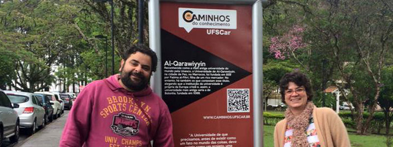

Clique para ler um QR Code
Se você está na UFSCar procure um toten nos pontos indicados no mapa e faça a leitura do código.

Clique para um passeio virtual
Escolha uma trilha e conheça a Universidade Federal de São Carlos de qualquer lugar do mundo.
O que é isso?
Caminhos do Conhecimento é um projeto de divulgação e popularização da ciência desenvolvido pelo LAbI - UFSCar com apoio do CNPq.
Saiba mais!

Laboratório Aberto de Interatividade
Universidade Federal de São Carlos
Rodovia Washington Luís, Km 235, s/n
Jardim Guanabara São Carlos - SP